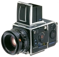

Hasselblad 202FA 推出于1998年，是200系列的最简单型。与203FE相比，最高快门速度由1/2000秒降为1/1000秒，无内测光、自动包围曝光机构和快门时间刻度盘。
非常好用的机器。其实要比503便宜。
测光精准，尤其在相对紧急的场合，比503方便得多。 可以用上哈苏镜头里口径最大的几款。
比纯机械的略显娇气，
昨就没人用过呢？东西是好就是要花我不少银子，除非不取媳妇！
成像好
太贵